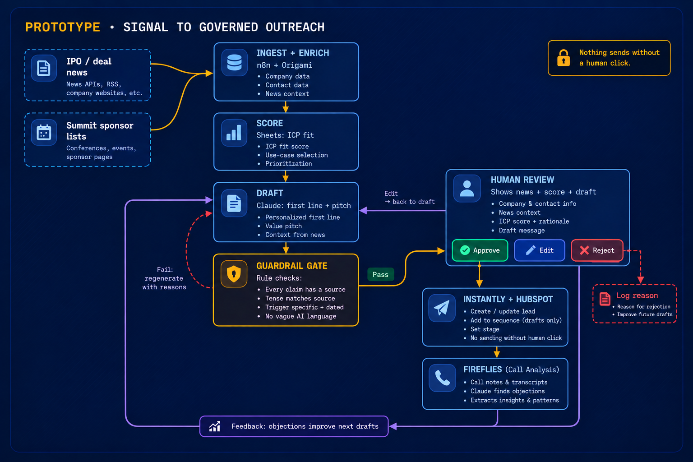

An idea for Brexy
Spot relevant finance signals, turn them into evidence-backed outreach drafts, and never send anything without human approval.
The 30-second version
Nothing sends without a human click.
Where this stands: it is an idea. The pipeline is not built yet. What exists today is a lead sheet I researched by hand with AI help, and the sample rows below come from it.
The principle
Brexy's product is built around that idea. I would apply the same principle to outbound:
Problem
In one sample row I reviewed, a draft congratulated a company on a successful IPO when the source only said it was eyeing one in two years.
The problem is not that AI cannot write an email. It is that a plausible-sounding sentence can quietly turn an uncertain event into a false claim, and a banker will notice.
Architecture

The guardrail step checks four things before a human sees a draft:
Each check has its own failure message, so when a draft fails, the log names the rule.
Example
Hiran Wanigasekera, Executive Director and Co-Head of Asia-Pacific Diversified Credit
Saw IFM just opened in Singapore to originate and execute private credit deals directly, expanding its diversified credit capabilities across Asia.
Why Brexy: a new local team needs fast screening memos on unfamiliar borrowers Source
Nigel Wong, Head of Asset & Wealth Management, Hong Kong
Saw ARC is putting nearly US$100m of its own capital into pre-IPO, structured and special-situation deals in Hong Kong, on top of the advisory and SPAC business.
Why Brexy: a cross-border bank running a principal book and an advisory book needs memos for both. Source
Two rows from the lead sheet, built from the cited public sources. Titles are as stated in those articles.
Decisions
A banker will notice one bad email. A person approves every message, and reject reasons get logged.
"Sound human" decays as prompts grow. Explicit rules can be tested and can name the reason they failed.
Rejections and call notes update the rules on a loop of their own, so the main pipeline stays simple.
Sheet before automation. If the manual version does not earn replies, automating it only makes the mistake faster.